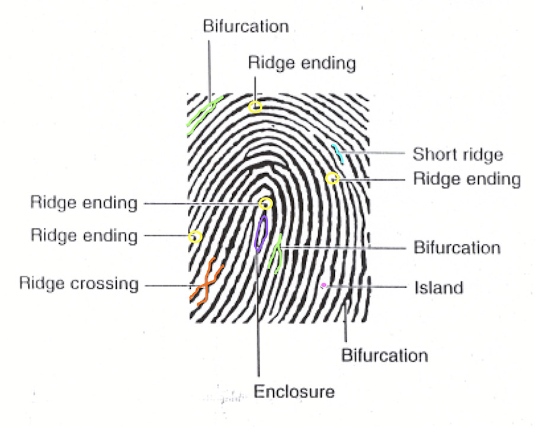
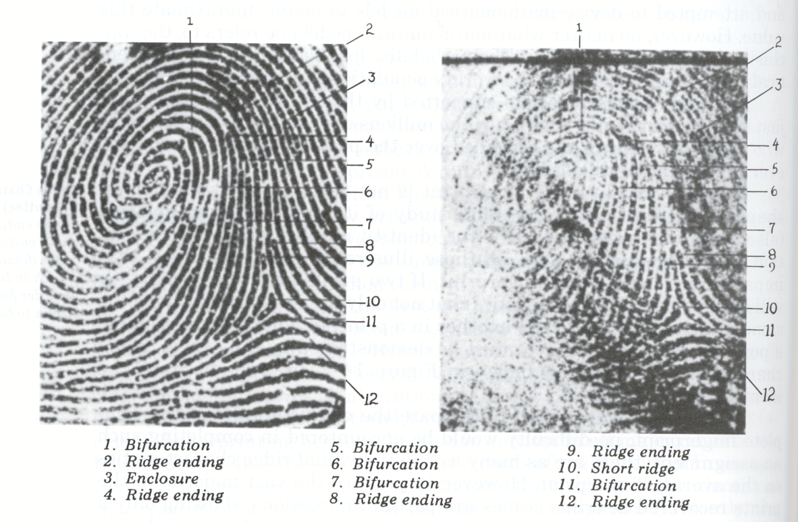

Fingerprint Identification
Ridge Characteristics
Identification through levels of information

Minutiae
Comparison of Fingerprints

Fingerprint Comparison Example
Identification through levels of information
Minutiae
Fingerprint Comparison Example